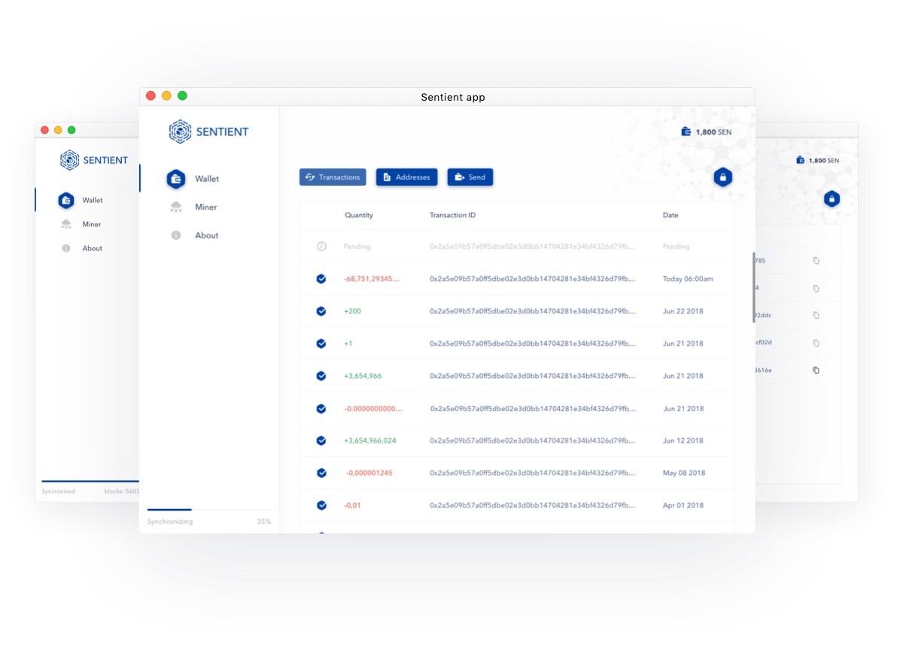

<table cellpadding="40" cellspacing="0" border="0" width="100%"
       style="background:#fff;font-size:1px;line-height:normal">
    <tbody>
    <tr>
        <td align="center" valign="top">
            <table cellpadding="0" cellspacing="0" border="0" width="100%"
                   style="max-width:550px; font-size:14px; color:#090B27; font-family: 'Avenir Next'; font-weight: normal;">
                <tbody>
                <tr>
                    <td valign="top">
                        <p style="line-height: 1.8; font-size: 14px; margin: 15px 0;">We are happy to announce that our
                            mainnet is live! <span style="vertical-align: sub;"></span><br>Please find
                            more info about the network called Sentient at the <a href="#" style="color: #0045E3">special website</a> and in our
                            <a href="#" style="color: #0045E3">Medium post</a>.</p>
                        <h2 style="font-size: 1.29em; font-weight: 500; margin: 38px 0 20px 0;">Mining opportunities for
                            everyone</h2>
                        <p style=" line-height: 1.7; font-size: 14px; margin: 15px 0;">The initial release includes both
                            GPU mining for professionals and the simplest ever CPU mining for people who don't own
                            specialized equipment for mining. Any person with a regular PC is able to join the mining
                            pool just by downloading the native wallet with the blue button below: </p>
                        <p style="position: relative;text-align: center; margin: 0;"><a href="#"></a>
                        </p>
                        <p style=" line-height: 2; font-size: 12px; margin: 12px 0;">Please find the instructions on how
                            to become a part of mining pool in our special Medium post: <a style="color: #0045E3"
                                                                                           href="https://medium.com/consensus-ai/how-to-become-a-miner-a8bf18d3a91">https://medium.com/consensus-ai/how-to-become-a-miner-a8bf18d3a91</a>
                        </p>
                        <h2 style="font-size: 1.29em; font-weight: 500; margin: 63px 0 20px 0">Special reward for early
                            adopters</h2>
                        <p style=" line-height: 1.7; font-size: 14px; margin: 15px 0 10px 0;">To expand the reach of the
                            network, we're happy to offer a 40x higher reward for the first minted blocks. </p>
                        <p style=" line-height: 1.7; font-size: 14px; margin: 0 0 29px 0;">The first block have 41 000
                            SEN coins minted. This number decreases every 10 minutes by 4 coins, until a minimum of
                            1,000 coins per block is reached in the next 70 days. </p>
                        <p style=" line-height: 1.7; font-size: 14px; margin: 37px 0 54px 0;">Don't miss your chance to
                            hit a jackpot - <a href="#" style="color: #0045E3">become a miner</a>!</p>
                        <p style=" line-height: 1.7; font-size: 14px; margin: 48px 0 25px 0;">More exciting news are
                            commig! Thank you for support <span style="vertical-align: sub;"></span><br>Keep an eye on our
                            social pages to stay up to date:</p></td>
                </tr>
                <tr>
                    <td align="center"><a style="display:inline-block; margin:15px" href="#" target="_blank">  </a> <a style="display:inline-block; margin:15px"
                                                                           href="#" target="_blank">  </a> <a style="display:inline-block; margin:15px"
                                                                           href="#" target="_blank">  </a> <a style="display:inline-block; margin:15px"
                                                                           href="#" target="_blank">  </a></td>
                </tr>
                </tbody>
            </table>
        </td>
    </tr>
    </tbody>
</table>